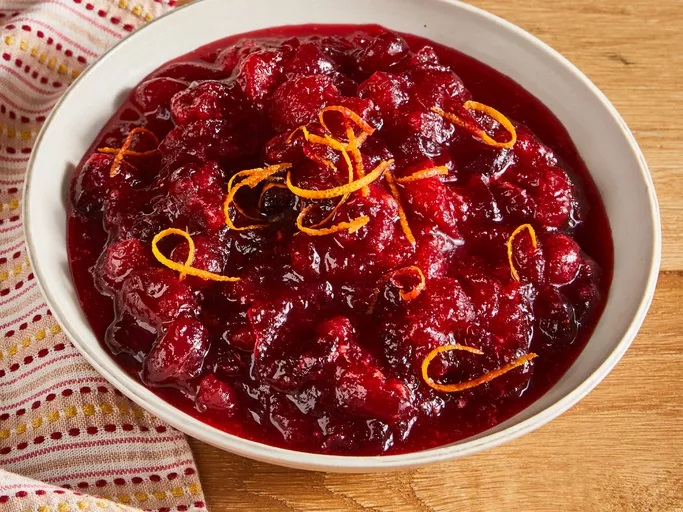

Cranberry Sauce Recipe

Ingredients
-
12 ounces of Fresh Cranberry: Opt for fresh cranberries that are firm, plump, and blemish-free. Lighter colored cranberries are best for sauce, as they contain more pectin and result in a thicker consistency.
-
1 cup of White Sugar: White sugar does more than add sweetness to classic cranberry sauce: It also absorbs liquid and, when heated, thickens the sauce.
-
1 cup of Orange Juice All cranberry sauce starts with a liquid base. If you don't like orange juice, you can substitute pomegranate juice or even red wine.
Steps
- Gather all ingredients.
- Dissolve sugar in orange juice in a medium saucepan over medium heat.Overhead shot of a pan with dissolving sugar in orange juice next to fresh cranberries
- Stir in cranberries and cook until they start to pop and sauce starts to thicken, about 8 to 10 minutes.
- Remove from heat and place sauce in a bowl. The sauce will continue to thicken as it cools.
- Enjoy
Go to Home